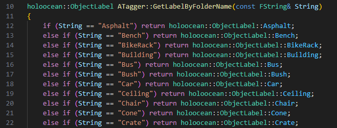
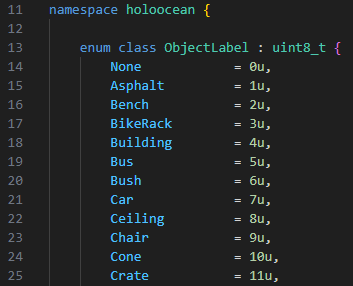
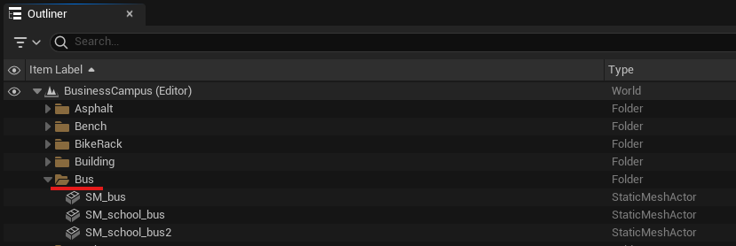
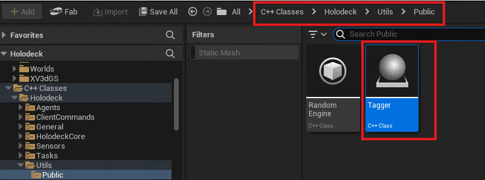
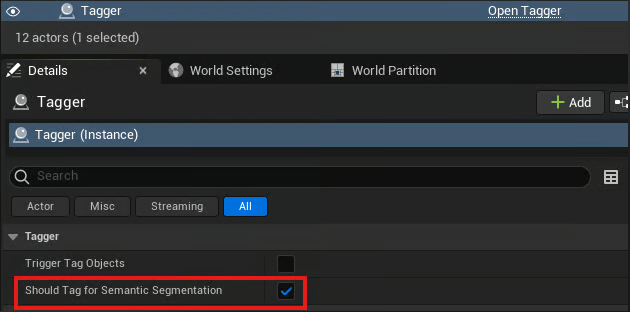
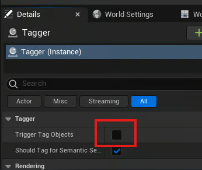
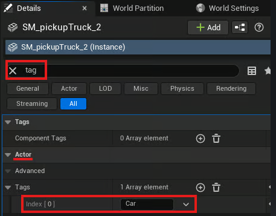
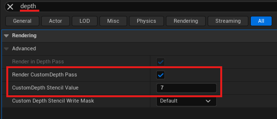
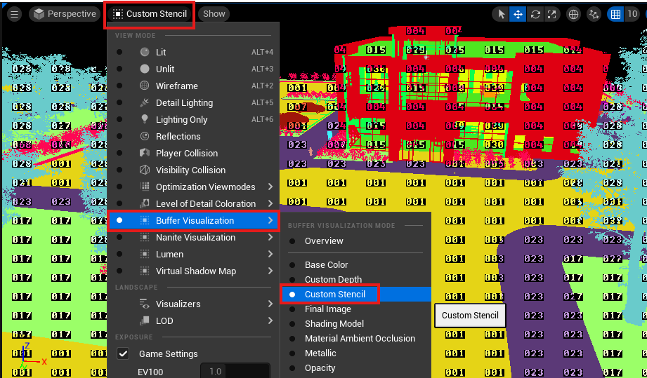

添加自定义语义标签
为了让 HoloOcean 识别语义标签，关卡中的每个资源都必须添加标签并更改渲染设置。这些更改必须在虚幻引擎编辑器中完成。
注意
HoloOcean 的语义实现使用模板值作为标签，因此标签值范围为 0-255。
为了方便操作，HoloOcean 提供了一个 Tagger 类，可以根据对象的文件夹标题自动应用标签。如果您不需要任何自定义标签，可以参考 HoloOcean 提供的标签列表（位于可用语义标签页面），然后继续使用 Tagger 类自动添加标签。
设置自定义标签
要向 HoloOcean 添加新标签，您需要将其添加到几个 C++ 文件中，并选择一种颜色与标签关联。
自定义标签
要添加自定义标签，请将标签名称添加到 Tagger.cpp 中的 GetLabelByFolderName 函数以及 ObjectLabel.h 中的 ObjectLabel 枚举中。

“GetLabelByFolderName”中包含的文件夹标题示例

“对象标签”中与文件夹标题关联的数字示例
更改标签颜色
要更改每个标签关联的颜色，您可以修改 engine/source/Holodeck/Utils/Public/HolooceanPallete.h 中列出的 RGB 值。
为资源添加标签
使用标签器自动添加标签
要让标签器自动添加标签，您需要确保资源放置在与其标签对应的文件夹中。例如，所有放置在“Bus”文件夹中的公交车资源都将被标记为与“Bus”对应的模板值。

接下来，启用标签器。在虚幻编辑器中，找到 C++ 类，然后导航到 Holodeck/Utils/Public/Tagger 目录，找到标签器的 C++ 文件。

将 Tagger C++ 文件拖入关卡中。在“详细信息”面板中，单击 Tagger 并启用“应为语义分割添加标签”。

然后，点击“触发标签对象”以自动应用标签。

手动添加标签
要手动设置标签，请在“详细信息”面板中选择要添加标签的资源。在该资源下，搜索“标签”以查找演员标签。将您的标签添加到参与者标签列表中。

然后，搜索“深度”，启用“渲染自定义深度通道”，并将“自定义深度模板值”设置为与您的标签关联的值。对每个要添加标签的资源执行此操作。此外，为景观启用“渲染自定义深度通道”，以确保其在深度输出中可见。

在编辑器中可视化标签
要可视化关卡并确保对象标签正确，请将视图模式从“点亮”更改为“自定义模板”。

可用语义标签
以下是 HoloOcean 当前已实现的所有标签列表。Ocean 和 BusinessCampus 包中的每个世界都使用这些标签的子集，具体取决于该世界中的资源（请参阅 BusinessCampus 和 Ocean 包中的世界子页面）。
| 文件夹名字 | 模板值 | RGB 值 |
|---|---|---|
| None（无） | 0 | {0, 0, 0} |
| Cube（立方体） | 1 | {240, 29, 219} |
| Sphere（球体） | 2 | {29, 89, 240} |
| BaseShape（基础形状） | 3 | {29, 240, 89} |
| Landscape（景色） | 4 | {153, 153, 153} |
| GroundGrass（草地） | 5 | {91, 235, 52} |
| GroundRock（地面岩石） | 6 | {196, 101, 6} |
| Ground（地面） | 7 | {194, 164, 159} |
| GroundPath（地面路径） | 8 | {76, 117, 252} |
| WaterPlane（水面） | 9 | {66, 135, 245} |
| Boat（小船） | 10 | {128, 64, 128} |
| Yacht（游艇） | 11 | {70, 70, 70} |
| ContainerBoat（集装箱船） | 12 | {102, 102, 156} |
| Concrete（混泥土） | 13 | {214, 138, 230} |
| Pipe（管道） | 14 | {73, 227, 78} |
| PipeCover（管道盖板） | 15 | {85, 166, 3} |
| VentCover（通气孔盖） | 16 | {245, 215, 66} |
| Rock（石头） | 17 | {153, 115, 9} |
| Seaweed（海藻） | 18 | {75, 166, 5} |
| Coral（珊瑚） | 19 | {235, 64, 52} |
| Plane（飞机） | 20 | {176, 165, 146} |
| Sub（潜艇） | 21 | {146, 161, 176} |
| Pier（码头） | 22 | {186, 76, 2} |
| Buoy（浮标） | 23 | {237, 53, 7} |
| Trash（垃圾） | 24 | {107, 156, 137} |
| Grass（草） | 25 | {91, 235, 52} |
| Asphalt（沥青） | 26 | {79, 82, 77} |
| Bench（长凳） | 27 | {212, 191, 125} |
| BikeRack（自行车架） | 28 | {209, 208, 203} |
| Building（建筑物） | 29 | {31, 240, 205} |
| Bus（公共汽车） | 30 | {240, 220, 43} |
| Bush（灌木） | 31 | {177, 247, 124} |
| Car（汽车） | 32 | {224, 109, 237} |
| Ceiling（天花板） | 33 | {161, 247, 233} |
| Chair（椅子） | 34 | {65, 13, 255} |
| Cone（圆锥体） | 35 | {255, 169, 10} |
| Crate（板条箱） | 36 | {140, 86, 0} |
| Desk（书桌） | 37 | {242, 65, 224} |
| Dumpster（大垃圾桶） | 38 | {0, 138, 14} |
| FireHydrant（消防栓） | 39 | {255, 0, 0} |
| Floor（地板） | 40 | {2, 125, 104} |
| GarbageCan（垃圾桶） | 41 | {0, 184, 92} |
| Pallet（托盘） | 42 | {143, 129, 6} |
| ParkingGate（停车门） | 43 | {222, 164, 177} |
| PatioUmbrella（庭院遮阳伞） | 44 | {195, 0, 255} |
| Railing（栏杆） | 45 | {242, 97, 130} |
| SemiTruck（半挂式卡车） | 46 | {124, 6, 138} |
| Sidewalk（人行道） | 47 | {232, 232, 232} |
| SpeedLimitSign（限速标志） | 48 | {222, 218, 245} |
| StopSign（停车标志） | 49 | {250, 37, 62} |
| StreetLamps（路灯） | 50 | {255, 149, 10} |
| Table（桌子） | 51 | {186, 17, 169} |
| Tree（树） | 52 | {69, 99, 46} |
| Wall（墙） | 53 | {126, 60, 250} |
| Unlabeled（未贴标签） | 54 | {0, 0, 0} |
| Any（任何一个） | 255 | {255, 255, 255} |